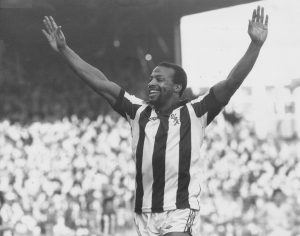

Cyrille Regis, MBE
1958 - 2018
"A tremendous footballer, an even better man" - Brendon BatsonCyrille Regis celebrate a goal for West Bromwich Albion
Early Life:
- Born 09/02/1958 in French Guinea
- moved to England in 1963
- grew up in Harlesden, Brent
- On leaving school he trained as an electrician before he moved in to professional football in 1977
Professional Domestic Football - 1977 - 1996:
| Years | Team | Apps | Goals |
| 1977 - 1984 | West Bromwich Albion | 241 | 81 |
| 1984 - 1991 | Coventry City | 238 | 56 |
| 1991 - 1993 | Aston Villa | 52 | 12 |
| 1993 - 1994 | Wolverhampton Wanderers | 19 | 2 |
| 1994 - 1995 | Wycombe Wanderers | 35 | 9 |
| 1995 - 1996 | Chester City | 29 | 7 |
International Football - 1977 - 1996:
| Years | Team | Apps | Goals |
| 1978 - 1982 | England U21 | 6 | 3 |
| 1978 - 1980 | England B | 3 | 0 |
| 1982 - 1987 | England | 5 | 0 |
For more information try the Cyrille Regis Wiki Page